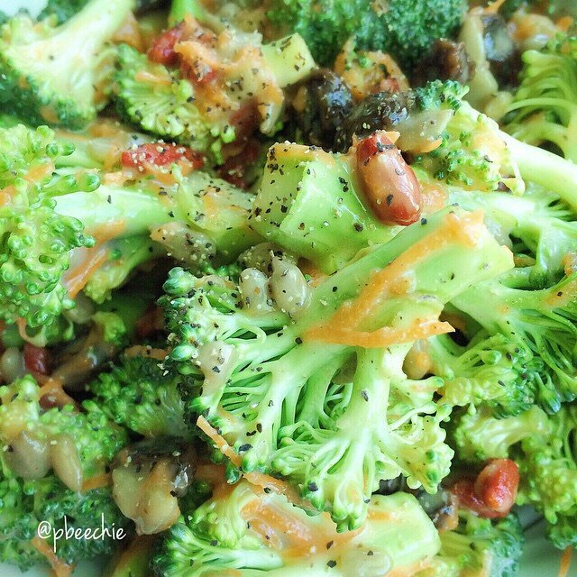

Creamy Broccoli Salad

Step into my maaaagical forest where the trees continue forever - but eh it's not that magical other than the fact that what looks like cheese is deceptively just shredded carrots which can disappoint some people so I guess it's not that magical BUT anyways. Broccoliiiiiiii. Do you like brockuhlayyy? I like brockuhlayyy. Youtube search "john sakars get your broc on" and thankme/hateme later. That's really the only point of this post I think - Watch it. Never forget it.
Sooo I just have to share how the Food Network featured me on their instagram account...and I am still in shock 4 days later. I have a fun little project I started after buying a Food Network magazine - they had a section called "50 toasts" with ideas for toast, and it lured me in. I convinced Jesse to buy it for me, but he joked he would only buy it if I made all 50. I agreed XD even though he wasn't serious haha. So now my 50toasts account is already 18 toasts in. It's so much fun and I never could have expected food network to notice me!! The recipes are so particular and I have to get such unique ingredients and I'm spending extra money on this stuff, but it's so worth it hahaa. Jesse is amazed by every single toast. They're all so good. They're not all "healthy" since I lot use butter, sugar, etc but they're definitely worth checking out!!
Creamy Broccoli Salad
Serves: 2
-
1 head of broccoli
-
1/3 cup shredded carrots
-
1/3 cup sunflower kernels
-
1/4 cup raisins
-
1/4 cup goji berries (or more raisins)
-
1/2 cup yogurt (I use coconut milk yogurt)
-
2 TBSP baking stevia (1-2 packets)
-
1 TBSP apple cider vinegar
-
black pepper to taste
Cut up and rinse your head of broccoli. Then just toss it in a bowl with the rest of the ingredients!! That's it! It's best served immediately or at least while everything is cold. :)